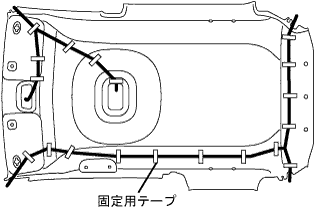
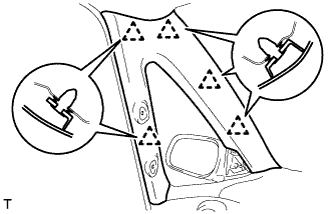
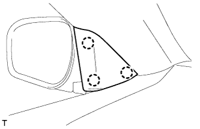
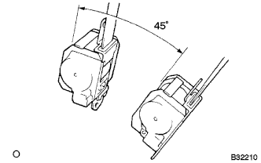
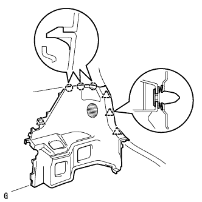
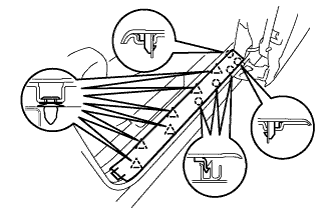
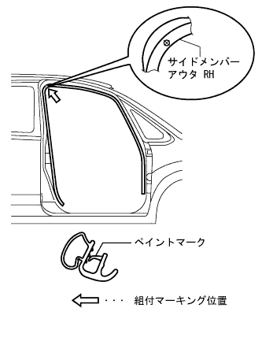

ルーフ ヘッドライニングASSY 取り付け |
| 1. ルーフ ワイヤ NO.1取り付け |
|  |
図の位置(マーキング)に合わせて固定用テープで、ルーフワイヤNO.1を取り付ける。
| 2. ルーフ ヘッドライニングASSY取り付け |
 |
コネクターを接続する。
クリップ3個で、ルーフヘッドライニングASSYを取り付ける。
| 3. バイザ ホルダ取り付け |
バイザホルダを右に90°回転させ、ツメを起こしバイザホルダ2個を取り付ける。
| 4. バイザASSY RH取り付け |
スクリュー2本でバイザASSY RHを取り付ける。
| 5. バイザASSY LH取り付け |
スクリュー2本でバイザASSY LHを取り付ける。
| 6. アシスト グリップ取り付け（RR） |
ボルト4本でアシストグリップ2個を取り付ける。
| 7. アシストグリップASSY取り付け（FR LH） |
ツメをかん合させ、アシストグリップASSYを取り付ける。
ツメをかん合させ、アシストグリップカバー2個を取り付ける。
| 8. マップ ランプASSY取り付け |
コネクターを接続する。
ツメをかん合させ、マップランプASSYを取り付ける。
スクリュー2本を取り付ける。
ツメをかん合させ、レンズを取り付ける。
| 9. ルーム ランプASSY NO.1取り付け |
コネクターを接続する。
ツメをかん合させ、ルームランプASSY NO.1を取り付ける。
ツメをかん合させ、レンズを取り付ける。
| 10. フロントピラー ガーニッシュ LH取り付け |
|  |
ガーニッシュ下部のツメを先に入れる。
クリップ5箇所をかん合させ、フロントピラーガーニッシュLHを取り付ける。
| 11. アシストグリップ FR取り付け |
 |
スクリュー2本で、アシストグリップFRを取り付ける。
| 12. アシストグリップ プラグ取り付け |
ツメ2箇所をかん合させ、アシストグリッププラグ2個を取り付ける。
| 13. ピラーNO.1 ガーニッシュ LH取り付け |
|  |
ツメ3箇所をかん合させ、ピラーNO.1ガーニッシュ LHを取り付ける。
| 14. フロントピラー ガーニッシュ RH取り付け |
 |
ガーニッシュ下部のツメを先に入れる。
クリップ4箇所をかん合させ、フロントピラーガーニッシュRHを取り付ける。
| 15. フロントピラー ガーニッシュ LWR RH取り付け |
ツメ5箇所をかん合させ、フロントピラーガーニッシュLWR RHを取り付ける。
| 16. センタピラー ガーニッシュ LH取り付け |
コネクターを接続する。
 |
クリップをかん合させ、センタピラーガーニッシュLHを取り付ける。
| 17. ルーフサイド ガーニッシュ INN LH取り付け |
 |
クリップをかん合させ、ルーフサイドインナガーニッシュLHを取り付ける。
| 18. デッキトリムサイド パネルASSY LH取り付け（駆動方式FF） |
 |
クリップおよびツメをかん合させ、デッキトリムサイドパネルASSY LHを取り付ける。
| 19. デッキトリムサイド パネルASSY LH取り付け（駆動方式4WD） |
 |
クリップおよびツメをかん合させ、デッキトリムサイドパネルASSY LHを取り付ける。
| 20. リヤシート3ポイントタイプ ベルトASSY OUT LH取り付け（フロアアンカ部） |
ボルトでリヤシート 3ポイントタイプ ベルトASSY OUT LH（フロアアンカ部）を締め付ける。
| 21. センタピラー ガーニッシュ RH取り付け |
 |
クリップをかん合させ、センタピラーガーニッシュRHを取り付ける。
| 22. フロントシート アウタベルトASSY RH取り付け |
ELRロック開始の傾斜角度点検
|  |
リトラクタを取り付け状態から静かに動かしたとき、全方向に対してベルトのロックが15°以内でロックしないことを点検し、45°以上でロック状態を保持することを点検する。
ボルト2本で、フロントシートアウタベルトASSY RHのリトラクタ部を仮締めする。
上部→下部の順にフロントシートアウタベルトASSY RHのリトラクタ部を本締めする。
ボルトで、フロントシートアウタベルトASSY RHのショルダアンカ部を取り付ける。
 |
コネクタ(プリテンショナ用)を接続し、ロッキングボタンをロックさせる。
ELRロック点検
車両取り付け状態において、すばやくシートベルトを引き出したとき、シートベルトがロックすることを確認する。
| 23. シート ベルト アンカ カバー キャップ取り付け |
 |
ツメのかん合を合わせ、シートベルトアンカカバーキャップを取り付ける。
| 24. ルーフサイド ガーニッシュ INN RH取り付け |
 |
クリップをかん合させ、ルーフサイドインナガーニッシュRHを取り付ける。
| 25. デッキトリムサイド パネルASSY RH取り付け（駆動方式FF） |
 |
クリップおよびツメをかん合させ、デッキトリムサイドパネルASSY RHを取り付ける。
| 26. デッキトリムサイド パネルASSY RH取り付け（駆動方式4WD） |
|  |
クリップおよびツメをかん合させ、デッキトリムサイドパネルASSY RHを取り付ける。
| 27. サイドNO.1 トリムASSY RH取り付け（駆動方式FF） |
 |
クリップおよびツメをかん合させ、サイドNO.1トリムASSY RHを取り付ける。
| 28. サイドNO.1 トリムASSY RH取り付け（駆動方式4WD） |
 |
クリップおよびツメをかん合させ、サイドNO.1トリムASSY RHを取り付ける。
| 29. リヤシート 3ポイントタイプ ベルトASSY OUT RH取り付け（フロアアンカ部） |
ボルトでリヤシート 3ポイントタイプ ベルトASSY OUT RH（フロアアンカ部）を締め付ける。
| 30. フロントシート アウタベルトASSY RH取り付け（フロアアンカ部） |
ボルトで、フロントシートアウタベルトASSY RHのフロアアンカ部を取り付ける。
| 31. ラップベルト アウタアンカ カバー取り付け |
 |
ツメのかん合を合わせ、ラップベルト アウタアンカ カバーを取り付ける。
| 32. バックドアスカッフ プレート取り付け |
両端上部のツメ位置を合わせる。
 |
クリップをかん合させ、バックドアスカッフプレートを取り付ける。
| 33. スペアホイール カバーASSY取り付け（駆動方式FF） |
スペアホイールカバーASSYを取り付ける。
| 34. リヤフロア カーペット取り付け（駆動方式FF） |
リヤフロアカーペットを取り付ける。
| 35. トランク(ラゲージコンパートメント) サイドトレイ取り付け（駆動方式4WD） |
トランク(ラゲージコンパートメント)サイドトレイを取り付ける。
| 36. ラゲージコンパートメント トレイ取り付け（駆動方式4WD） |
トランク(ラゲージコンパートメント)トレイを取り付ける。
| 37. ラゲージルームボックス リッド取り付け（駆動方式4WD） |
ラゲージルームボックスリッドを取り付ける。
| 38. バックドア ウエザストリップ取り付け |
ウェザストリップのペイントマークとボデー側のウェザストリップ取り付け用切り欠き部(矢印部分)を合わせ、バックドアウェザストリップを取り付ける。
| 39. リヤドア オープニングトリム ウェザストリップ LH取り付け |
ウェザストリップのペイントマーク(水色および白色、どれか1箇所)とボデー側のウエザストリップ取り付け用切り欠き部(矢印部分)を合わせ、リヤドアオープニングトリムウエザストリップLHを取り付ける。
| 40. デッキサイドトリム カバー FR LH取り付け |
 |
車両後方に押し込みクリップおよびツメをかん合させ、デッキサイドトリムカバーFR LHを取り付ける。
| 41. フロントドアスカッフ プレート LH取り付け |
|  |
フロントドアスカッフプレートLH前端部のツメを差し込む。
ツメおよびクリップをかん合させ、フロントドアスカッフプレートLHを取り付ける。
| 42. フロントドア オープニングトリム ウェザストリップ RH取り付け |
|  |
ウェザストリップのペイントマークを、サイドメンバーアウタ RHの組付マーキング位置に合わせ、フロントドアオープニングトリムウエザストリップRHを取り付ける。
| 43. カウルサイドトリム ボード RH取り付け |
 |
ツメおよびスタッドをかん合させ、カウルサイドトリムボードRHを取り付ける。
| 44. フロントドアスカッフ プレート RH取り付け |
 |
スカッフプレート前端部および後端部のツメをかん合させる。
ツメをかん合させ、フロントドアスカッフプレートRHを取り付ける。
| 45. リヤシートクッションASSY取り付け（リヤシート分割可倒式） |
リヤシートクッションASSY前側をリヤシート クッション ロック ストライカにロックさせる。
リヤシートベルトを、リヤシートクッションカバー & パッド後部のゴムバンドに通す。
 |
ボルトで、リヤシートヒンジLHを取り付ける。
リヤシートバックヒンジＲＨにスナップリングを取り付ける。
リヤシートヒンジRHを、リヤシートクッションASSY右側ブラケットの角パイプに挿入する。
| 46. リヤシートバックASSY LH取り付け（リヤシート分割可倒式） |
ボルト2本でリヤシートバックを取り付ける。
 |
クリップ2個を取り付ける。
| 47. リヤシートバックASSY RH取り付け（リヤシート分割可倒式） |
ボルト2本でリヤシートバックを取り付ける。
クリップ2個を取り付ける。
| 48. リヤシートクッションASSY取り付け（駆動方式4WD） |
 |
シートベルトを通し、フックをかん合させる。
リヤシートクッションASSY前部のクリップをかん合させる。
| 49. リヤシートバツクASSY取り付け（駆動方式4WD） |
 |
リヤシートバックASSYを車両に乗せ、リヤシートバックフレームの穴とヒンジ側のロケーションを合わせボルト2本を仮付けする。
ボルト2本を本締めし、リヤシートバックASSYを取り付ける。
新品のクリップ2個を取り付ける。